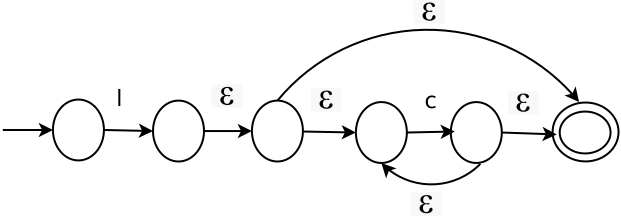

Diagrama a bloques del proceso de construcción de un analizador léxico
Estamos en la conversión de ER a AFN. Usando la construcción de Thompson:

Ejemplo 1
Convertir la ER del identificador en AFN por medio de la construcción de Thompson.
La ER del identificador. La ER del identificador se presenta a continuación.
l (d | l)*
Se considera como la concatenación de dos símbolos. Primero se hace la siguiente asignación:
b = (d | l)*
La concatenación queda de la siguiente forma:
l b
Así que se aprovecha el modelo de Thompson de la concatenación, donde:
Representación de la cerradura. Ahora la b representa una cerradura de Kleene de una alternativa de letras y dígitos. Hacemos la siguiente igualdad de la alternativa:
c = l|d
La siguiente igualdad se cumple.
b = c*
Por lo que ahora el modelo de Thmpson queda de la siguiente forma:

Como c tiene un equivalente:
c = l|d
Así que su modelo de Thompson es el que aparece en la siguiente figura:
Este se substituye y por lo tanto el modelo queda completo para el identificador. Por lo que el AFN resultante es el siguiente:
El AFN se puede sintetizar, por lo que se plantea de la siguiente forma: